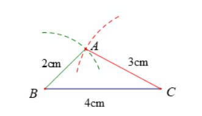
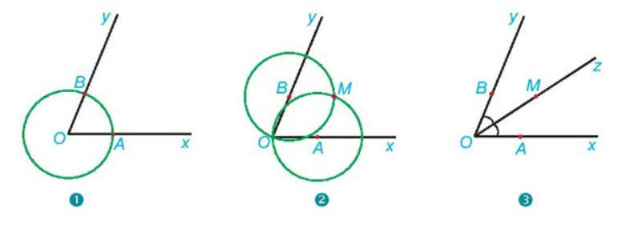

• Hai tam giác ABC và A'B'C' bằng nhau nếu chúng có các cạnh tương ứng bằng nhau và các góc tương ứng bằng nhau, nghĩa là:
AB = A'B'; AC = A'C'; BC = B'C' và góc A = góc A'; góc B = góc B'; góc C = góc C'.
• Khi kí hiệu hai tam giác bằng nhau thì thứ tự các đỉnh tương ứng phải được viết theo cùng một thứ tự.
Ở đây hai đỉnh A và A' (B và B', C và C') là hai đỉnh tương ứng.
Hai góc A và A' (B và B', C và C') là hai góc tương ứng.
Hai cạnh AB và A'B' (AC và A'C', BC và B'C') là hai cạnh tương ứng.
Khi đó ta kí hiệu:
ΔABC = ΔA'B'C'
• Cách vẽ tam giác khi biết số đo ba cạnh.
Ví dụ: Vẽ tam giác ABC biết AB = 2 cm; AC = 3 cm; BC = 4 cm.
+ Dùng thước kẻ có vạch chia vẽ đoạn BC = 4 cm.
+ Dùng compa mở khẩu độ 2 cm, tâm tại điểm B, vẽ một cung tròn.
+ Mở compa khẩu độ 3 cm, tâm tại điểm C, vẽ một cung tròn.
+ Giao điểm của hai cung tròn là điểm A.
+ Vẽ các đoạn thẳng AB và AC ta được tam giác ABC.

• Trường hợp bằng nhau cạnh - cạnh - cạnh (c.c.c).
Nếu ba cạnh của tam giác này bằng ba cạnh của tam giác kia thì hai tam giác đó bằng nhau.
• Cách vẽ tia phân giác của một góc bằng thước kẻ và compa.
Vẽ tia phân giác của góc xOy ta làm như sau:

1) Vẽ đường tròn tâm O cắt Ox, Oy lần lượt tại A và B.
2) Vẽ đường tròn tâm A bán kính AO và đường tròn tâm B bán kính BO. Hai đường tròn này cắt nhau tại điểm M khác điểm O.
3) Vẽ tia Oz đi qua M. Tia Oz là tia phân giác của góc xOy.